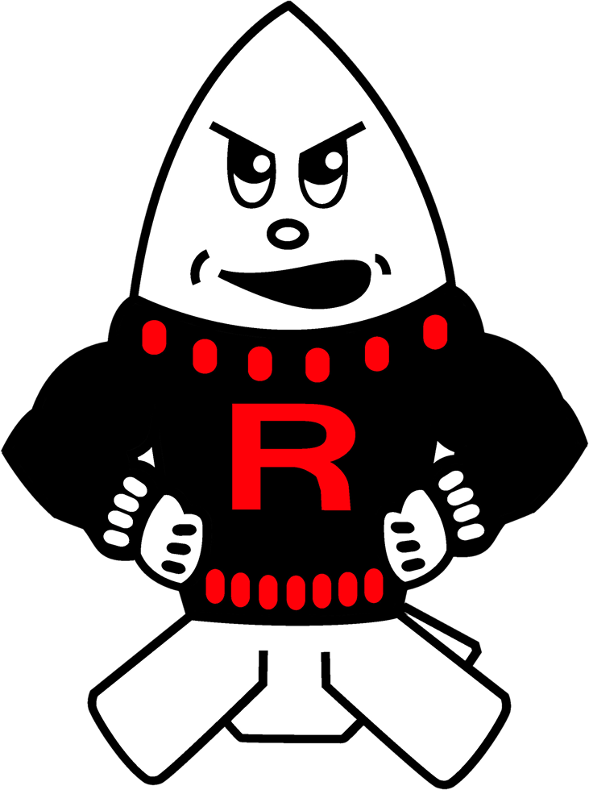

Free Resource · Article
Bombers, Hobbits, and Paper Companies: Our Story and the People Who Continue to Write It
Tonight, the Rensselaer Central Bombers take on the Kankakee Valley Kougars for the 56th annual Cracker Barrel game. This longstanding county rivalry has been a staple event for our students and our community for several generations. As I sit back on Friday and watch students and staff members prepare, I am reminded of the special history that exists in our small community of nearly 6,000 people.
This past week, my 9th grade English class read an article written by Michael Campbell in 2007 and published in the local Vintage Views titled “From Indians to Bombers”. The article shares the history and story of how our community adopted the unique mascot “Bombers”, but I believe the article demonstrates a much deeper message than a simple nickname.
Rensselaer started playing football in 1898. It is remarkable to think how much America has changed since 1898: two world wars, a depression, technological advancements like the automobile, aircraft, computers, and space travel, Women’s suffrage, the Civil Rights Movement, the list goes on. However, one thing has remained constant: Rensselaer has sported the red and black on the football field for 128 years.

Most assume that the nickname “Bombers” was inspired by military attacks on our enemies. However, this is not the case. In the 1936–37 school year, the boys basketball team, known as the Indians or Fightin’ Iroquois, was led by Head Coach Slim Bausman. The team was undersized, but full of skilled shooters and were coined the nickname “Bausman’s Bombers” by a local newspaper writer. In the following school year, the football team still kept the name Indians, while the basketball team adopted the name Bombers. The following school year (1938–39), every team at Rensselaer adopted the name Bombers.
The existing high school was constructed in 1968. In the 1970–71 school year, high school art teacher Roger Beehler held a contest to create a logo for the school. Then student, Nancy Johnson, designed the “Bomber Boy” logo, the notorious white bomb shell that sports a black sweater with a red Block-R and has been recognized as the primary logo for Rensselaer Central High School and Middle School since then. Throughout the years, Rensselaer Central High School has used some different variations of the Block R and various different planes, but the Bomber Boy logo continues to be utilized and recognized by the community.
Around 2002, a high school student named J.D. Feaster became interested in becoming the official school mascot at Rensselaer sporting events. In an effort to personify the Bomber Boy logo, Feaster made a costume resembling the logo and issued a survey to the student body asking for their vote in choosing an official name for the mascot. It was during this vote, that the name Bomber Bob was then adopted as the name for the Bomber Boy logo, and has remained the name of the logo.
I teach 9th Grade English at RCHS, so allow me to digress for a second. In the story, Lord of the Rings, hobbit Frodo Baggins and his best friend Samwise Gamgee are on their nearly 1,800 mile journey by foot to destroy the ring and they stop to reflect on their journey and start to tell of many of the great stories of great men who came before them. Samwise asks whether the two of them shall “ever be put into songs or tales” — years and years afterwards. Essentially, Sam asks, are we in the middle of one of those stories?
I used this example with my students this week and challenged them to ponder this. While we may live in a small, rural town, where I often hear “there is nothing to do here”, there is so much history, tradition, and story within this community that unites us and brings us together — it is what makes us Bombers. This story is demonstrated in our name, our identity, our pride, and most importantly, the people that historically have made this place special and unique and continue to make us who we are. But the most important part of this story is the fact that the story is still being written. The story of the Bombers is currently a story in progress and like Frodo and Samwise, it will one day be told by younger generations that will continue to feel the impact and legacy by the people who are currently authoring this story. It’s a reminder that in this crazy world, where we continue to be inundated and overstimulated with information, algorithms, and negativity, it is vital that we commit to being present and choosing to live in the moment, rather than distracted with brain rot. Like Andy Bernard says at the end of his role on The Office, he wishes there were “a way to know you’re in the good old days” before you have actually left them. Our lives, or as one of my former teachers Shannon Anderson calls it, “our dash”, is today and every day, and we remain the author of our stories, so we may as well make it a good one.
Reading this article with my class this week allowed me to really step back and remember the Bombers that have had a lasting impact on me and have helped write our story. I think of people like Adrian Frederick, Chris Meeks, Bill Zimmer, Natalie Waling, and Kelly Rowan — teachers and coaches who inspired me to want to be a teacher and coach. Individuals like Joe Burvan, whom I didn’t know personally, but their legacies continue to exist within the walls of our school, along with the likes of Walt Schaltenbrand, Steve Brandenburg, Gene Edmonds, and many more.
This week has been a great reminder of why I do what I do, and the pride I have in being a Bomber. While this place may not be perfect, nor has it ever claimed to be, the story of this place continues to be written and stories continue to be shared by the people who make this place special, about the people who have always made this place special.
Go Bombers.
-Hunter Hickman
Source: Campbell, Michael. “From Indians to Bombers.” Vintage Views, 2007.